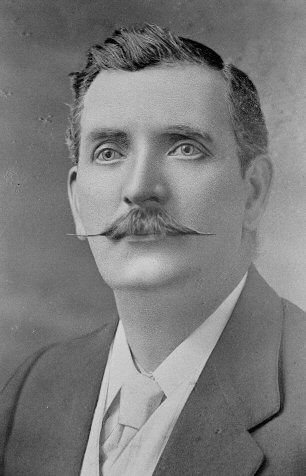

Charles Correlli Johnson Because Charles Johnson Snr was a teacher of the violin, and apparently very fond of the music of a particular composer for that instrument, his second son received the splendid middle name of Corelli in addition to his own name of Charles. Charles Corelli Johnson was born in New Street, Coventry in 1861, went to Trinity School where he became a pupil teacher and completed his formal education at Borough Road Training College in London. Returning to Coventry in 1882, he looked for a teaching post, and to his delight was offered the chance to take on the organisation of a brand new school to be opened at Earlsdon. What a challenge that was for a young lad of 21! Of course he accepted and began what was to be a unique career, serving the whole of his working life as a headmaster. He was given orders by the school committee - get as many pupils as he could to start at the new school. This meant going round the 'village' interviewing parents and persuading them that their children would receive a good education under his guidance. He managed to get 73 to start with, but it wasn't long before many more children began to take advantage of the new little school. With the help of his assistant mistress, Miss Lucy Satchwell from Kenilworth Board School and a couple of pupil teachers, he worked hard and dedicatedly to make a school the estate would be proud of. The following year, in 1883, Charles married his childhood sweetheart, Anna Lenton, and they began their married life in a house on Earlsdon Street, later moving to Moor Street before finally settling at 57 Earlsdon Avenue South. In 1905 he transferred to Red Lane School, an unhappy move according to one of his four daughters, the late Mrs Marie Bates, and it is difficult to understand why he went. He retired from teaching in 1925, died in 1936 aged 74 and is buried in London Road Cemetery, mourned by many. It was undoubtedly his dedication and hard work which started the tradition of the good, solid education to be had at Earlsdon School, and to which so many past pupils look back with gratitude and affection. From Schooldays Remembered, Earlsdon School 1882-2002, Ed. Mary Montes. |